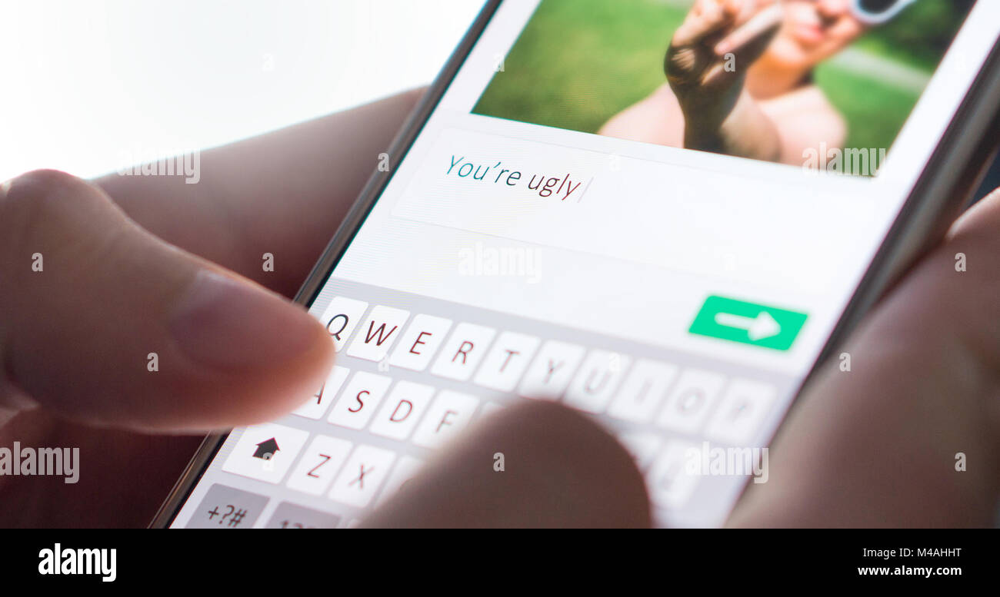
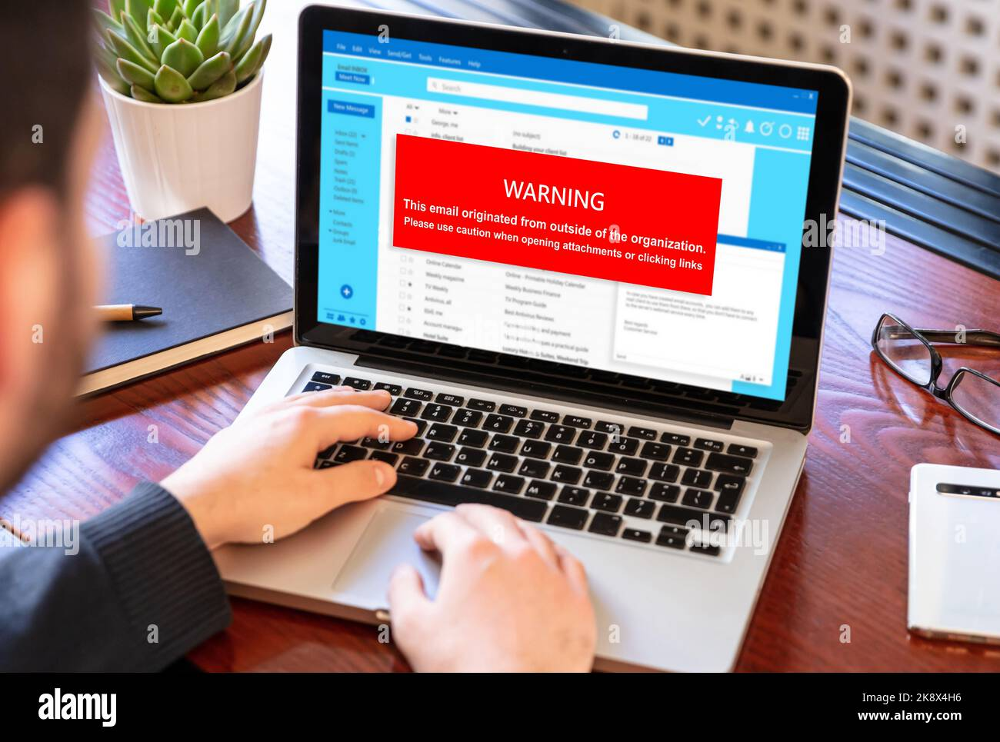

The Impact of Excessive Social Media Use on Future Aspirations and Career Goals
Introduction
Excessive social media use can significantly influence individuals' future aspirations and career goals. Research suggests that prolonged exposure to social media can lead to decreased productivity, increased procrastination, and distorted perceptions of success. Individuals may spend more time comparing themselves to others online, which can negatively impact self-esteem and confidence. Moreover, constantly seeking validation and approval from virtual interactions can detract from pursuing meaningful real-life goals.
Reasons
Posting when you should be working
engaging in social media while at work can easily lead to distractions, pulling attention away from tasks and deadlines.
Loss of Productivity: Constantly checking and posting on social media interrupts workflow and decreases overall productivity. It takes time to switch between tasks, and every interruption can lead to a loss of focus.
Negative Perception: Employers may view excessive social media use during work hours as a lack of dedication or professionalism. It can harm your reputation and credibility in the workplace.
Making offensive comments
posting offensive comments online can have serious and long-lasting consequences for a potential job seeker. It's essential for individuals to be mindful of their online presence and to avoid engaging in behavior that could jeopardize their career prospects. Building a positive and professional online reputation is crucial for success in today's job market.

Sharing confidential information
Sharing confidential information online violates the trust of employers, colleagues, or clients who have entrusted the individual with sensitive data. This breach of trust can damage relationships and undermine the individual's reputation for reliability and integrity.Sharing confidential information online may have legal consequences, including lawsuits for breach of contract, violation of nondisclosure agreements, or intellectual property theft

Complaining about your job
a complaining attitude can have significant demerits for a potential job seeker, including negative perceptions, poor teamwork, limited problem-solving skills, and reduced opportunities for advancement. It's essential for job seekers to cultivate a positive attitude, resilience, and professionalism to maximize their chances of success in the competitive job market.
Conclusion
In summary, while social media can provide valuable networking opportunities and access to information, its excessive use can have detrimental effects on individuals' future aspirations and career goals. It is essential for individuals to recognize the potential impact of their social media habits and take proactive steps to maintain a healthy balance between online engagement and real-life pursuits.